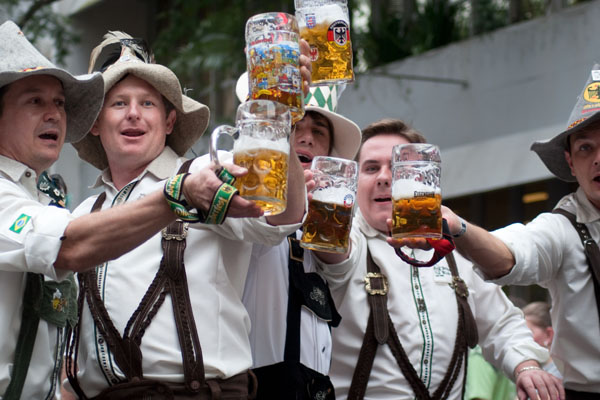
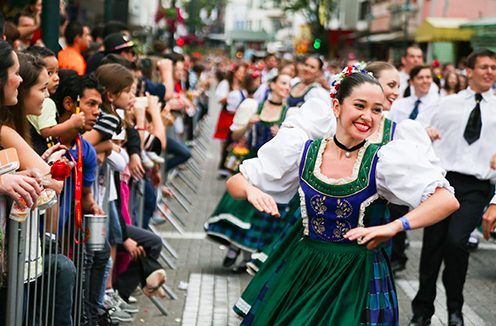
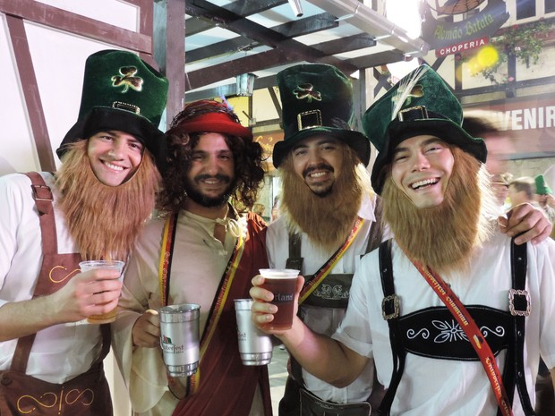
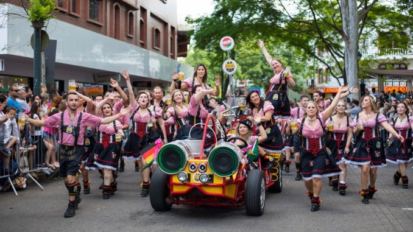
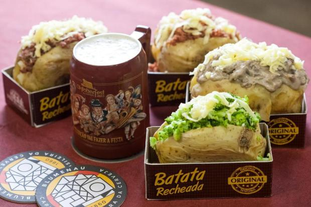
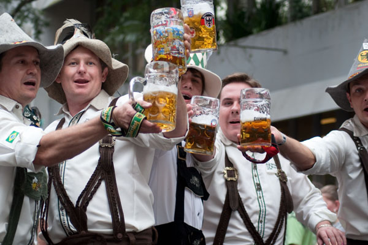
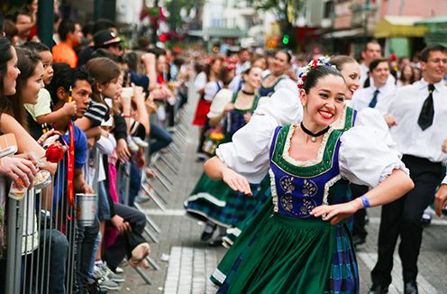
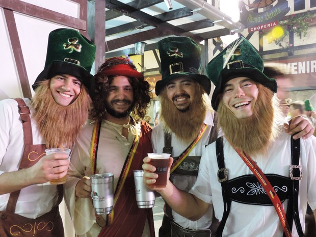
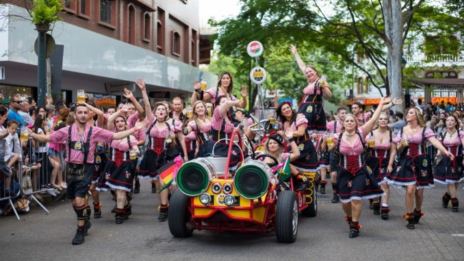
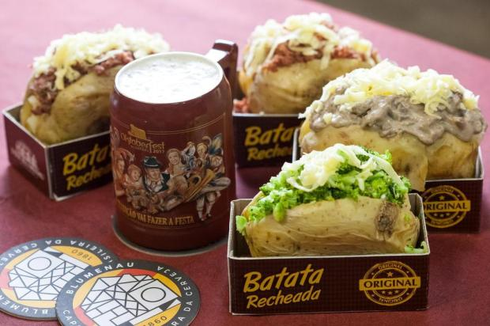
Prosit!
Blumenau, colonizada por alemães, sempre manteve viva a cultura e as tradições de seus antepassados. No início da década de 80, empresários e representantes de entidades de classe e o poder público da cidade se uniram e idealizaram um evento onde esta cultura pudesse ser celebrada e mostrada ao mundo. Inspirada naturalmente pela homônima alemã nasceu então, em 1984, a Oktoberfest Blumenau. Naquele primeiro ano, em apenas 10 dias de festa, mais de 100mil pessoas visitaram o evento. Na década de 90 e início dos anos 2000 a festa consolidou-se como um dos maiores eventos turísticos do Brasil e uma das maiores Oktoberfests do mundo. A tradição nunca foi deixada de lado, mas nessa época a protagonista do evento era a cerveja. Agora, a festa acompanhou as tendências tecnológicas, modernizou-se em vários aspectos e, principalmente, retornou a festejar igualmente todos os elementos da cultura germânica local! A cada ano, mais de 500 mil pessoas visitam a Oktoberfest Blumenau e experenciam o amor pelas tradições, música, dança, trajes típicos e gastronomia típica. Tudo isso com muita alegria e, claro, um bom chope. Prosit!
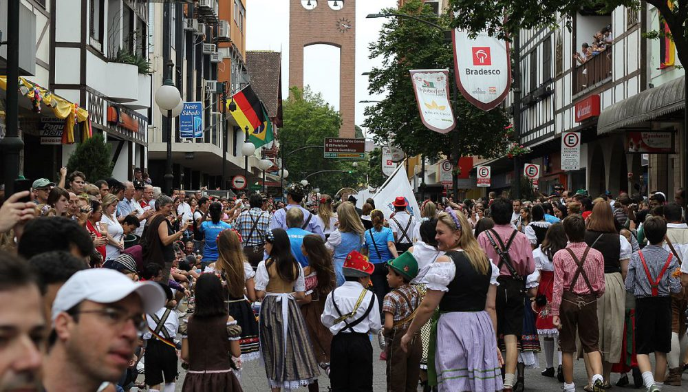A Oktoberfest de Blumenau é um festival de tradições germânicas que ocorre na cidade de Blumenau em Santa Catarina durante o mês de outubro. Ela é uma das celebrações que surgiram no mundo similares à Oktoberfest de Munique, na Alemanha. Em alemão, "Oktober" significa outubro, e "Fest", festa ou festival.
A Oktoberfest de Blumenau acontece no Parque Vila Germânica, um grande centro de convenções com vários pavilhões e tudo decorado como se fosse uma vila do interior da Alemanha. Durante todo o ano, as lojas e bares da Vila Germânica permanecem abertos para receberem os turistas, porém é durante a Oktoberfest que ela se transforma em um grande complexo de diversão regado a muito chope.
Obatzda com bretzel: pão e patê
Brotzeitbrett: tábua de frios
Grillendl e Schweinehaxe: frango assado e joelho de porco
Bratwurst mit sauerkraut: salsichão com chucrute
Schüblig: salsichão suíno grelhado
Carrossel de linguiça artesanal de Bragança
Hot dog na Salch & Pão
Quando: 09/10/2019 à 27/10/2019 das 12:00hs
Onde: Parque Vila Germânica
Rua: Rua Alberto Stein, 199
CEP: 89036-200
Cidade: Blumenau
Categoria: Festas de Outubro
Região: Vale Europeu
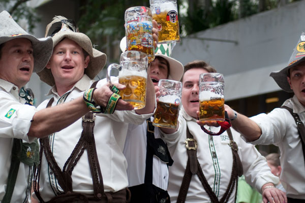
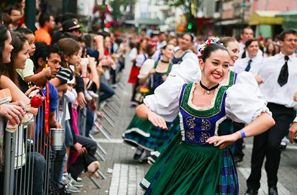
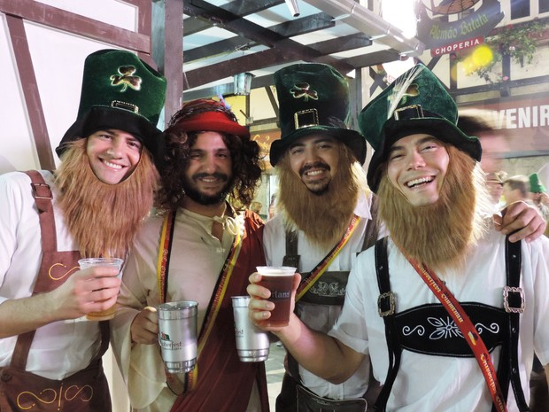
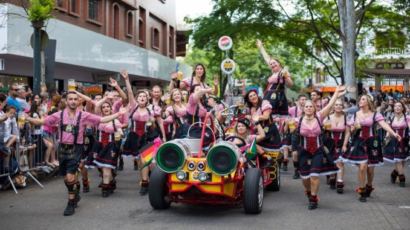
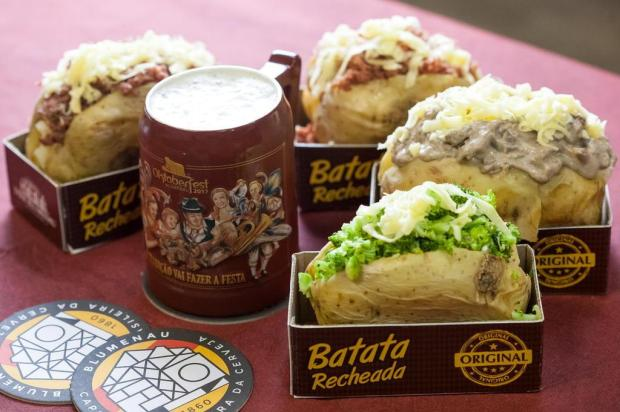